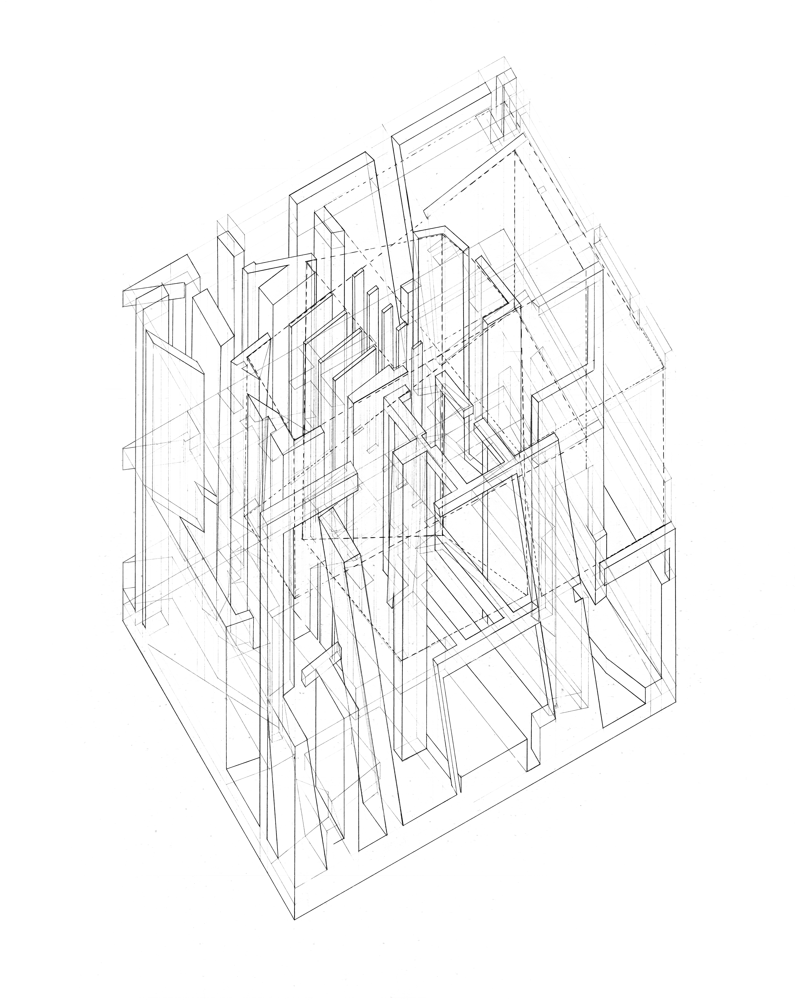
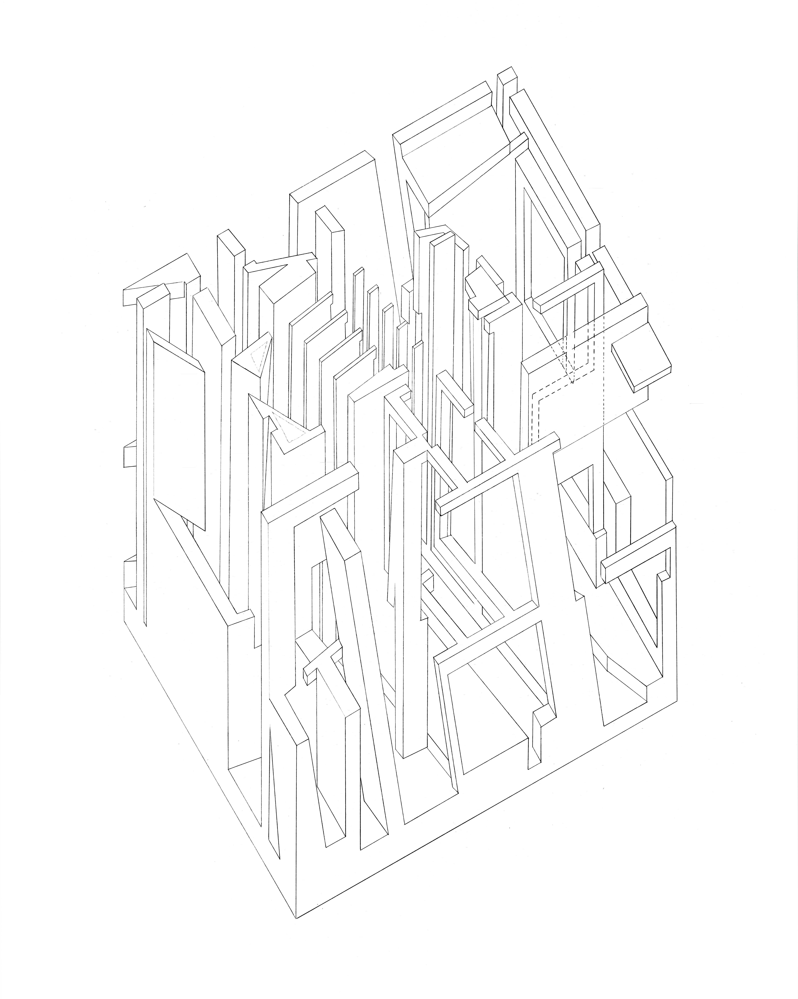
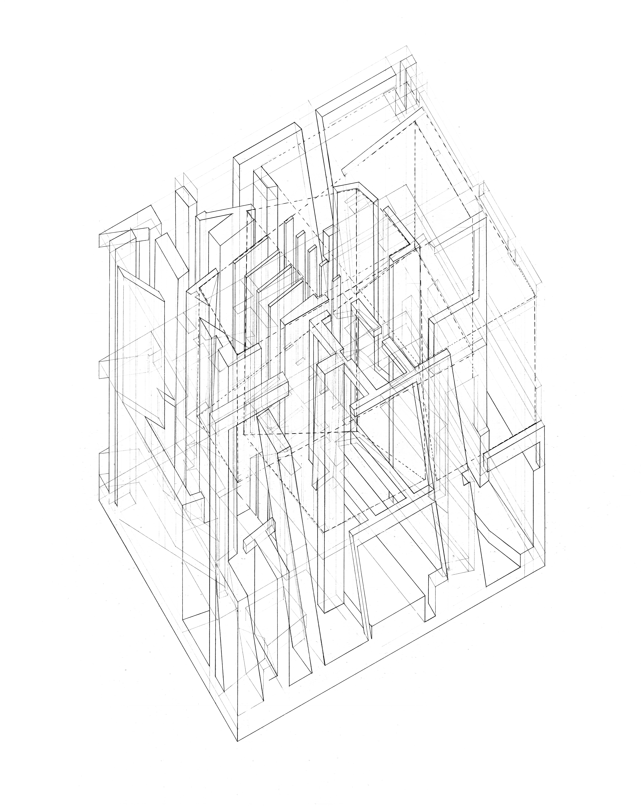
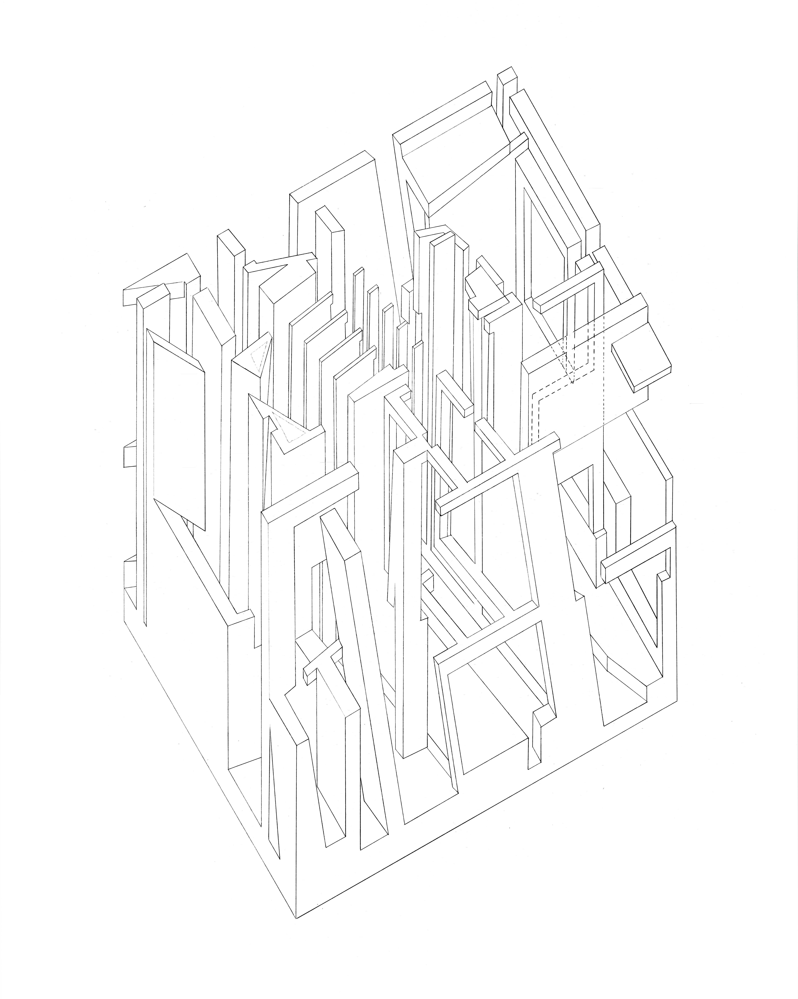

Architecture 11A
Introduction to
Visual Representation
Architecture 11A
Introduction to
Visual Representation
For this architecture studio course, I was assigned the painting Egg Beater No.2 by Stuart Davis. This painting served as the framework for a series of reinterpretative designs including an extrusion model and an axonometric drawing of our reinterpreted architectonic space and system. All the drafting work in this class was done with a pencil, straight-edge, and drafting paper; no digital technology was allowed. Grade received: A-.
 


